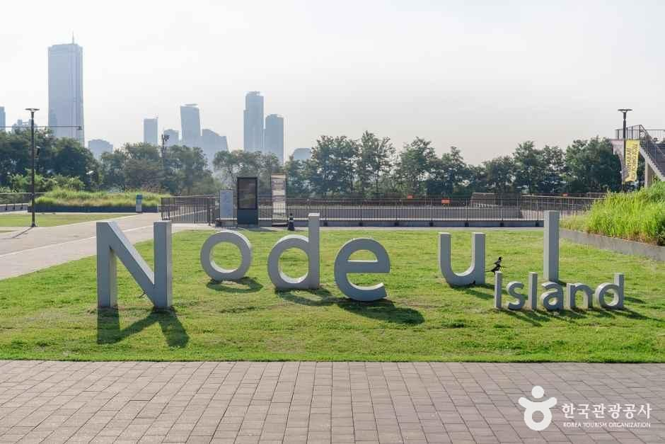
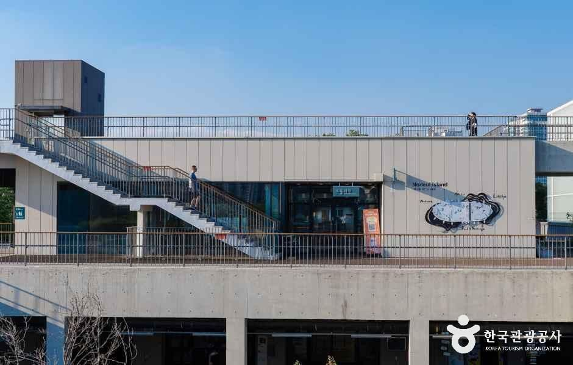
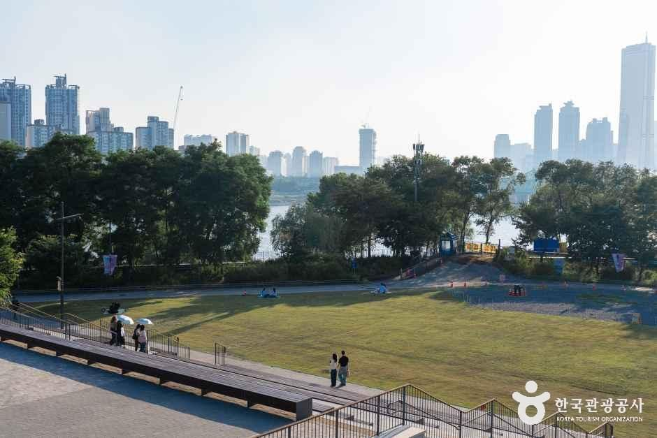
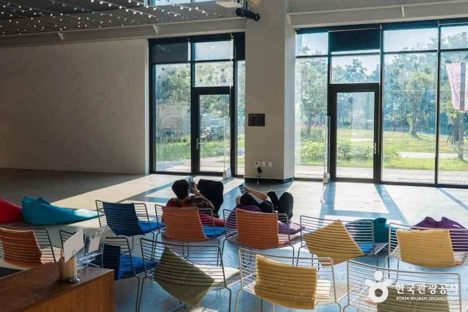
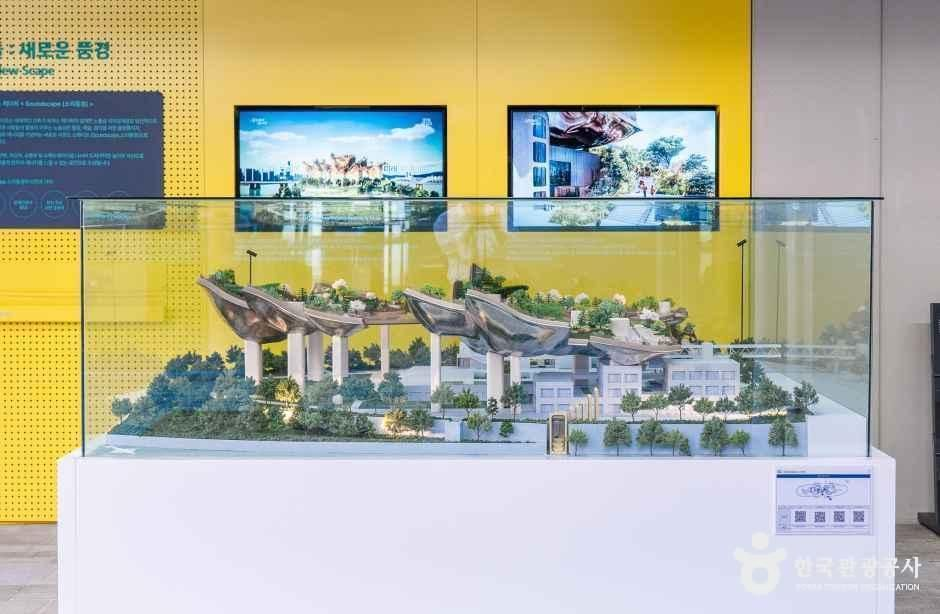

Nodeul Island Guide: Overview
This Nodeul Island guide covers a small oval island in the middle of the Han River, right under Hangang Bridge in Yongsan-gu. Since September 2019 it has been run as a music-based cultural complex: a lawn facing the Yeouido skyline, a rooftop square, a bookshop-lounge and a mid-sized concert hall, all free to walk around.
It is also the stage for big free events such as the Seoul Music Festival, held here on October 24, 2026. The island is in the middle of a long redevelopment, so we checked what is open now, what has closed and what is coming, using Korea Tourism Organization (KTO) data and the island's official notices.

From Sandbank to Music Island
According to KTO, the name comes from Nodol, "the stone where egrets played". From the 1930s to the 1950s the island, then called Jungjido, was loved for its sandy beach in summer and skating rink in winter. After Han River development in the 1960s and 1970s and several failed building plans, it became a forgotten island that people only crossed by car.
Seoul began planning its revival in 2012, and Nodeul Island reopened on September 28, 2019 with the motto "a cultural base connected by music". The east forest is now a protected habitat for the endangered narrow-mouthed toad (maengkkongi), moved here in October 2017; that area is closed to visitors.

What to See and Do Now
- Lawn yard (Jandi Madang): a large sloping lawn facing the river and the Yeouido towers, popular for picnics and sunset views.
- Nodeul Square: the central rooftop plaza with the island's symbol sculpture, open 24 hours outside private events.
- Nodeul Seoga: a book and music lounge on floors 1–2 where you can read, sit and catch small exhibitions or performances.
- Galleries and lounge: Nodeul Gallery 1 and 2 and the Nodeul Lounge host changing exhibitions and workshops.
- Live House: a two-floor concert hall with 456 seats (708 standing) for ticketed gigs; open only on show days.
- Riverside paths: the island loop and the new waterfront cultural space, opened on September 18, 2026.


Seoul Music Festival 2026 on Nodeul Island (October 24)
The 2026 Seoul Music Festival took place on Nodeul Island on Saturday, October 24, 2026, from noon to 9 p.m., with free entry. Organised by the Seoul Metropolitan Government, this year's edition partnered with the Korean Music Awards, presenting award winners and nominees alongside popular artists, newer musicians and long-standing legends.
- Main stage line-up: Paul Kim, Kwon Jin-ah, Rooftop Moonlight (Okdal), Nerd Connection, Chudahye Chagis, the Kim Chang-wan Band, with an opening set by GLL.
- Side programmes: a Korean Music Awards album exhibition, a listening zone, karaoke, photo booths, a Haechi photo zone, busking, talk shows and a food zone.
- Next edition: the festival is held every autumn, but dates and venues change; check the official Seoul Music Festival site before planning.
Construction and the Nodeul Global Art Island Plan
Seoul is turning the island into the Nodeul Global Art Island. Because of the works, every shop on the island (restaurants, cafés and the convenience store) closed in 2026, and on weekends food trucks run at the Market-tteul area instead. Nodeul Seoga and the exhibition spaces remain open.
The first new piece, a waterfront cultural space, opened on September 18, 2026. According to the island's official notice, a floating garden is due for completion in December 2027 and the elevated "sky art garden" in 2030. Expect fences and partly closed areas until then.

Visitor Information
| Item | Details |
|---|---|
| Place | Nodeul Island (노들섬), 445 Yangnyeong-ro, Yongsan-gu, Seoul |
| Hours | Outdoor spaces 24 hours. Indoor: Nov–Feb Tue–Sun 10:00–20:00; Mar–Oct Tue–Fri 10:00–21:00, weekends & holidays 10:00–22:00 |
| Closed | Mondays, January 1, Seollal and Chuseok (indoor facilities) |
| Admission | Free (some concerts and events ticketed) |
| Information | +82-2-749-4500 (Nodeul Island, Seoul Foundation for Arts and Culture) |
| Parking | Available: about 90 cars, 1 large bus, 8 accessible spaces (fees apply) |
| Subway | Line 9 Nodeul Station Exit 2, then about 600 m towards Hangang Bridge |
| Pets | Allowed outdoors on a lead or in a carrier; not allowed indoors. Tents are not permitted. |
| Seasonal events | Seoul Music Festival (2026: Oct 24, 12:00–21:00, free) |
Sources: Korea Tourism Organization data for Nodeul Island, Nodeul Island Live House and the 2026 Seoul Music Festival, the official Nodeul Island website (nodeul.org) and Seoul Metropolitan Government news. Photos © Korea Tourism Organization (KOGL Type 1, attribution). No AI-generated images. Hours, facilities and event dates change, so confirm before you go.
Getting There
Take Subway Line 9 to Nodeul Station, leave by Exit 2 and walk about 600 m along Hangang Bridge. From Line 1 Yongsan Station (Exit 1) or Line 4 Sinyongsan Station (Exit 3), walk to the Sinyongsan Station bus stop (03-004) and take any bus towards Nodeul Island, getting off at the Nodeul Island stop (03-340). Walking across Hangang Bridge from the Yongsan side takes about 20 minutes and gives good river views.
Tips for Visiting
- Bring food and water on weekdays: shops are closed during construction; food trucks run only at weekends.
- Come for sunset: the lawn faces west towards Yeouido and the Hangang Railway Bridge.
- Avoid Mondays: indoor spaces close, though the lawn and paths stay open.
- Check event days: big festivals fill the island; quieter days are better for reading at Nodeul Seoga.
- Combine it: pair with the National Museum of Korea in Yongsan or a Han River walk to Yeouido.
How It Compares with Other Han River Spots
| Nodeul Island | Yeouido Hangang Park | Seoul Forest | |
|---|---|---|---|
| Location | Mid-river under Hangang Bridge | Yeouido riverbank | Seongdong-gu riverside |
| Highlight | Music venue, lawn, river views | Big lawns, cruises, food trucks | Forest walks, deer enclosure |
| Cost | Free | Free | Free |
| Food on site (late 2026) | Weekend food trucks only | Convenience stores, delivery spots | Cafés nearby |
| Best for | Concerts, sunset, quiet reading | Picnics, cycling | Family strolls |
Who It Suits
- Great for: Music fans visiting during festival season or for a Live House gig.
- Great for: Travellers who want a calm sunset spot in central Seoul without paying.
- Great for: Visitors staying in Yongsan, Yeouido or Noryangjin.
- Less ideal: Anyone expecting cafés and restaurants on site until the redevelopment is finished.
Plan Your Seoul Trip
Nodeul Island FAQ
Where is Nodeul Island and how do I get there?
Nodeul Island (노들섬) sits in the middle of the Han River under Hangang Bridge, at 445 Yangnyeong-ro, Yongsan-gu. The easiest route is Subway Line 9 to Nodeul Station, Exit 2, then a 600 m walk onto Hangang Bridge. Many buses (150, 151, 152, 500, 501, 504, 506, 507, 605, 750A, 750B, 751, 752 and 6211) stop at the Nodeul Island stop (03-340), including from Yongsan and Sinyongsan stations.
Is Nodeul Island free?
Yes. Entry to the island, its lawn, square and riverside paths is free. The outdoor spaces are open 24 hours. Concerts at the Live House and some exhibitions or festivals may be ticketed.
What are the opening hours?
Indoor facilities follow seasonal hours: in winter (November–February) Tuesday to Sunday 10:00–20:00; in summer (March–October) Tuesday to Friday 10:00–21:00 and weekends and holidays 10:00–22:00. They close on Mondays, January 1, Seollal and Chuseok. Individual venues may differ.
When is the Seoul Music Festival?
The Seoul Music Festival is a free outdoor music festival run by the Seoul Metropolitan Government. The 2026 edition was held on Nodeul Island on October 24, 2026, from 12:00 to 21:00, with Paul Kim, Kwon Jin-ah, Rooftop Moonlight (Okdal), Nerd Connection, Chudahye Chagis and the Kim Chang-wan Band. Dates and venues change each year, so check the official site for the next edition.
Are there restaurants and cafés on the island?
Not at the moment. Because of construction for the Nodeul Global Art Island project, all shops on the island (restaurants, cafés and the convenience store) have closed. Food trucks operate at weekends, so bring water and snacks on weekdays.